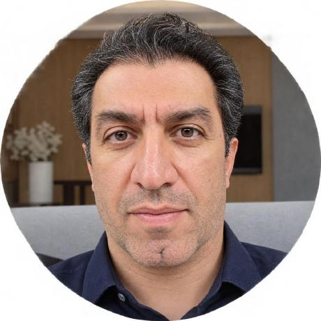

سیستمهای تصمیمیار بالینی
Clinical Decision Support Systems
طراحی ابزارهای تعاملی برای ساختارمند کردن ارزیابی بالینی و پشتیبانی از تصمیمگیری پزشک.
متخصص بیماریهای داخلی با ۲۰ سال سابقه طبابت؛ علاقهمند به طراحی سیستمهای تصمیمیار بالینی، کاربرد هوش مصنوعی در پزشکی و توسعه نرمافزارهایی که مسائل واقعی محیط درمان را به راهکارهای دیجیتال کاربردی تبدیل میکنند.

Bridging clinical medicine and software engineering to build practical tools for healthcare.
من متخصص بیماریهای داخلی با ۲۰ سال سابقه طبابت هستم. تجربه روزمره در محیط درمان، علاقهام به فناوری و توسعه نرمافزار را به سمت ساخت ابزارهایی هدایت کرده است که واقعاً به نیازهای پزشکان و کادر درمان پاسخ دهند.
تمرکز اصلی من توسعه Clinical Decision Support Systems (CDSS) است؛ ابزارهایی برای کمک به تحلیل اطلاعات بالینی، بررسی تشخیصهای افتراقی، ارزیابی شدت بیماری و بهکارگیری راهنماهای مبتنی بر شواهد.
در کنار پزشکی، روی اپلیکیشنهای وب و دسکتاپ، ابزارهای پزشکی، گردشکارهای مبتنی بر هوش مصنوعی و اتوماسیون فرایندهای کسبوکار و اداری کار میکنم.
از مسئله بالینی تا طراحی و پیادهسازی راهکار نرمافزاری.
طراحی ابزارهای تعاملی برای ساختارمند کردن ارزیابی بالینی و پشتیبانی از تصمیمگیری پزشک.
بررسی کاربردهای عملی هوش مصنوعی برای کاهش بار مستندسازی و بهبود گردش کار بالینی.
ساخت برنامههای کاربردی با رابط کاربری روشن، ساده و متناسب با نیاز کاربران.
توسعه ابزارهایی برای بهینهسازی فرایندها، افزایش بهرهوری و سادهسازی عملیات تکراری.
ابزارهایی که در پروژهها با آنها کار میکنم یا در حال توسعه مهارت در آنها هستم.
این فهرست نشاندهنده فناوریهایی است که در پروژهها استفاده میکنم یا در حال یادگیری و بررسی آنها هستم و به معنای تسلط یکسان بر همه آنها نیست.
مخزنهای عمومی گیتهاب؛ برای مشاهده کد، مستندات و جزئیات هر پروژه وارد مخزن شوید.
نرمافزار پزشکی مفید باید قابل اعتماد، شفاف و متناسب با واقعیت محیط درمان باشد.
بهویژه در زمینه سلامت دیجیتال، هوش مصنوعی پزشکی و توسعه ابزارهای تصمیمیار بالینی.